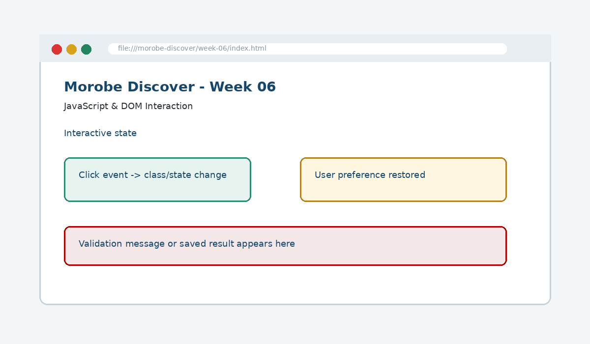

JavaScript & DOM Interaction
Add behaviour to a page by connecting programming logic to user actions via the DOM.

How this week's learning connects
1. Reading
Build the conceptual foundation and vocabulary for JavaScript & DOM Interaction.
2. Lecture
Inspect the core principle, code patterns and visible browser result.
3. Lab
Complete the guided build tasks with checkpoints, testing and Git evidence.
4. Morobe Discover
Integrate the result into the same project and preserve earlier features.
DOM
The browser's object model of the page.
Event listeners
Connect user actions to functions.
Class toggling
Keeps behaviour in JavaScript and styling in CSS.
Read the code line by line
const menuButton = document.querySelector(".menu-toggle");
const nav = document.querySelector(".site-nav");
menuButton.addEventListener("click", () => {
nav.classList.toggle("is-open");
});.site-nav.is-open {
display: flex;
}What it does → Why it works → Where we use it
document.querySelector
Finds the first DOM element matching a CSS selector.addEventListener
Registers a function to run when a named event occurs.click
The event emitted when the button is activated.classList.toggle
Adds the class if absent and removes it if present..is-open
A state class CSS can use to reveal the navigation.
Project connection: This code belongs to the Week 06 Morobe Discover increment and should produce a visible or testable change related to Interactive mobile navigation and state-based UI behaviour.
Editable browser playground
Modify the example, run it, break it deliberately, and reset it. The preview is isolated from the course page.
Morobe Discover tasks
- Add DOM hooks to the navigation
- Write an event listener for the mobile menu
- Toggle a state class instead of inline styles
- Add a simple theme or FAQ interaction
- Test interaction with click and keyboard focus
Checkpoint tests
Morobe Discover — Week 06
This is the actual source project increment supplied for this week.
Check your understanding
Knowing the definition is not enough
A weak submission can define JavaScript & DOM Interaction but cannot point to the exact Morobe Discover file, code line and browser result. During code defence, be ready to connect code → visible behaviour → user reason → test evidence.
Prepare the next checkpoint
Week 07 strengthens forms with validation and stores lightweight choices in the browser.